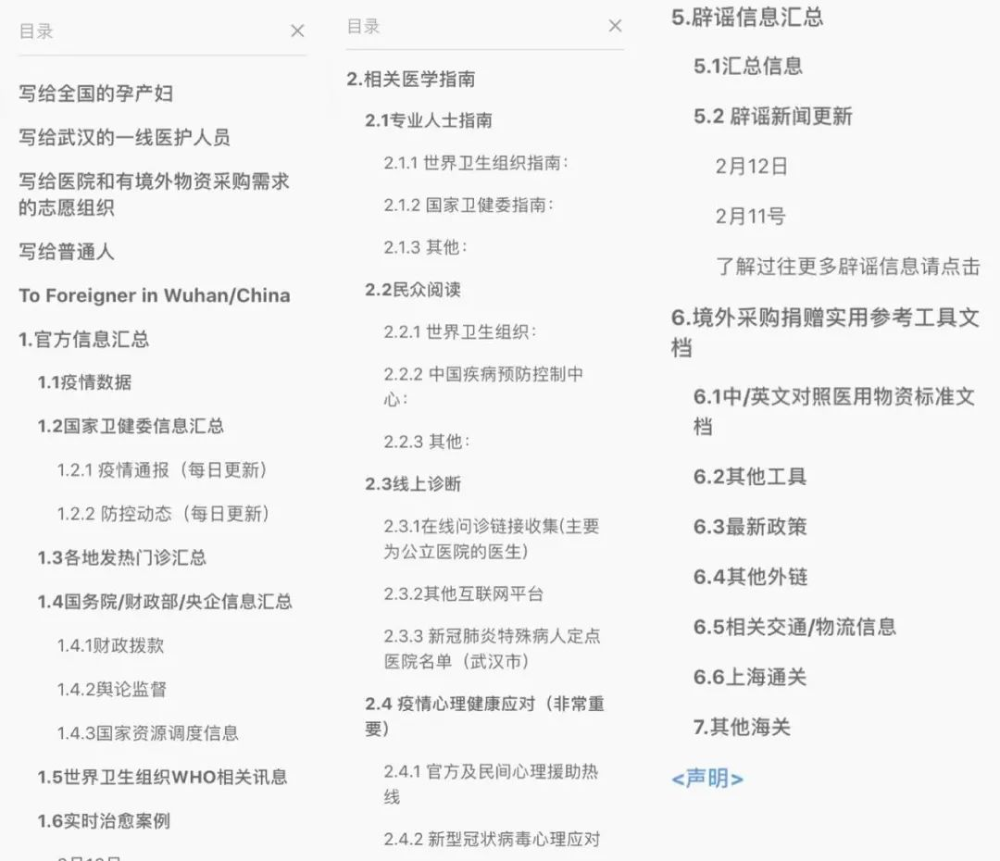
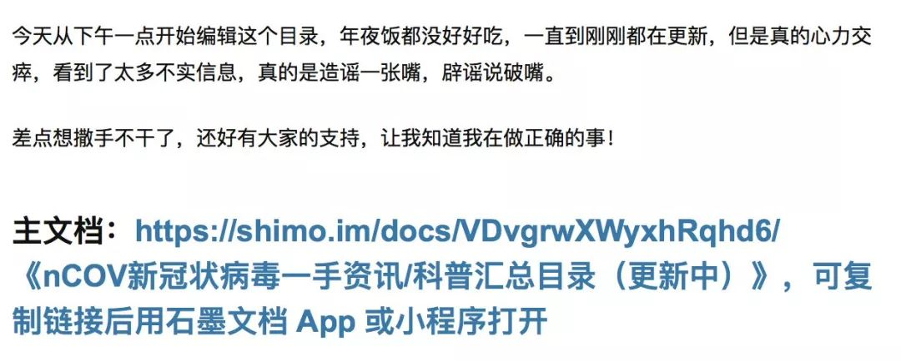
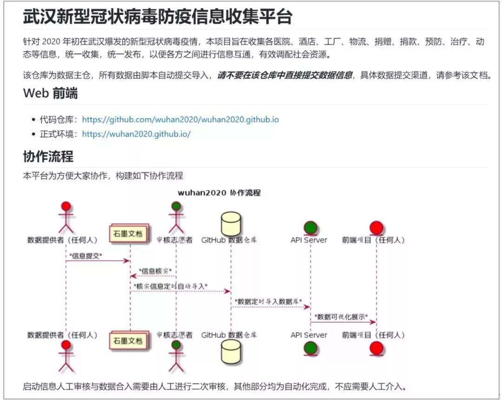

石墨文档吴冰：半数员工被困武汉，在疫情中央迎战远程办公风口
原文链接 备份链接 燃财经（ID:rancaijing）原创 作者 | 苏琦 编辑 | 周昶帆 今年的疫情来得十分突然，却将包括石墨文档在内的远程办公行业向前推进了一大步。 很多人不知道的是，石墨文档是一家在武汉成立，直到现在仍有一半员工 …
作者：御寒 编辑：石灿 本文来源：刺猬公社 （ID：ciweigonghse ）
“
这是一场和病毒的斗争，也是一场和信息的战役。越早认清事情的真相，就能越快为接下来可能发生的事做好准备。
”
当大多数人宅在家里无所事事的时候，阿夏桑已经过了大半个月日夜颠倒的日子。特别是正月初一到初六，她几乎每天都睡不到五个小时——凌晨三、四点入睡，早上八点就在焦虑中醒来。这一切都是从从1月24日开始的。
阿夏桑是陕西人，本科学公共管理专业，研究生读出版专业，是一名科普作者，不定期在知乎、豆瓣上分享一些和运动理论、生理健康、性别议题相关的科普性文章。
这个春节，阿夏桑又多了一个身份。她所创建的文档《2019-nCoV新冠状病毒一手资讯/科普汇总目录》（点击“阅读原文”获取文档链接）已经获得了超过60万人次的阅读量，这份包含了官方信息、防疫指南、辟谣信息等各类内容链接的目录索引，在除夕当晚刷爆了微博、朋友圈、豆瓣、知乎等各个平台，全网普及面超过100万人次。
文档部分目录
除了阿夏桑，很多人都在疫情爆发之后，主动加入各式各样的志愿团队。他们遍布在国内和国外，还有人就在武汉当地，通过网络完成了一场跨地域的信息接力。这些来自民间“谣言终结者”们每日接收数以万计的新闻、资讯、传闻、流言，提取出最权威和有用的信息，并传递到每一个关心疫情的老百姓手里。
这是一场和病毒的斗争，也是一场和信息的战役。谁能拨开迷雾，谁就能看见真相和希望。
一位科普博主决定做些什么
联系到阿夏桑的时候，她刚遛完狗回家。她养的狗叫做拿铁，是一只17个月大的波士顿梗，今年一月份才成为她家的新成员。
1月22日，阿夏桑在网上看到一条谣言，称新型冠状病毒会传染给狗，在狗的体内进行复制继而传染给人，有人因此将自己的宠物丢弃或者杀害。这让刚刚拥有爱犬的她异常愤怒。像这样荒诞的谣言，在疫情爆发前期充斥了各大社交网站。
阿夏桑告诉刺猬公社（ID：ciweigonghse），她平时喜欢健身、关注健康，在疫情还未爆发的时候，她就开始关注世卫组织发布的相关指南，也做了应对的准备工作，替家人和朋友购置了口罩、消毒液、药品，也在朋友圈和豆瓣发消息提醒网友。
“其实整件事情就是在跑信息的时间差”，越早认清事情的真相，就能越快为接下来可能发生的事做好准备。认识到这一点，阿夏桑决定将网上的各类信息做一个系统汇总，方便大家查找信息，了解疫情的全貌。
大年三十那天，阿夏桑从上午10点忙活到晚上8:30，吃年夜饭的时候也在编汇总目录。除了筛选出世卫组织、国务院、卫健委和自媒体等一手来源，搜集尽可能全面且准确的个人防控指南等，她还是第一批注意到疫情期间的心理健康应对措施、医疗物资的物流信息的人。
这是一个略显魔幻的除夕之夜。鱼龙混杂的信息，夹杂在春晚的欢歌笑语之中，所有人的心情都变得异常复杂。
25日凌晨，阿夏桑的心理和体力都到了临界值。她看到太多来源不明的负面消息，也看到这些消息正在压垮不明真相的人们的心理防线。她绝望地把这个文档发在豆瓣鹅组，在豆瓣广播和朋友圈里呼吁朋友转发，希望这份文档能被更多人看到，帮助他们分辨真假和是非。

 阿夏桑在鹅组发的帖子以及网友回复
阿夏桑在鹅组发的帖子以及网友回复
第二天，大年初一，阿夏桑的手机爆了。
“引爆”手机的都是好消息：在朋友、豆瓣友邻和鹅组网友的积极转发下，这份目录文档在24个小时内获得了超过十万的阅读量。媒体联系上她，询问文档的授权转载；石墨文档、有道云笔记主动提出为她提供免费的高级服务和技术支持；果壳网也找上了门，希望转发她的文档，同时提供两位编辑协助她的工作。
1月26日，阿夏桑邀请了两位编辑好友，再加上心理学和医学领域的两位果壳编辑，成立了一个五人的小团队，她还在母校的出版硕士群里找到了9个愿意帮忙的学妹学弟，专门做信息搜集和录入的基本工作，他们的团队也因此有了一个名字：MP编辑小组。
和阿夏桑一样忙碌的还有一个后来被取名为Simo的团队。Simo是最早开始系统整理疫情信息的团队之一，除夕当天，Simo制作并发布了《防疫需求与民间援助信息索引》，文档包括了物资供应和需求信息、海内外运输信息、各类生活援助的供需信息等，目前的阅读量超过24万次。
在1月30日正式宣布结束志愿工作时，Simo团队共有近100位志愿者，遍布了世界各地。根据Simo团队的介绍，他们将需求分为了不同部分，每一部分都有特定的志愿者进行编辑和整理，国内和海外党按时区24小时轮班作业，保证文档24小时更新。
A2N（Anti 2019-nCov）团队整理的《关注新型冠状病毒的可靠信息与谣言》是最早整理官方信息和谣言的文档之一，阅读量超过106万。随后，A2N又增加了疫情实时情况、病毒科普、相关文献翻译等工作。
1月22号，A2N志愿组织为遏止2019-nCoV相关谣言而创立，短短几天队伍就扩大到了上百人。A2N的志愿者遍布了全国34个省、直辖市、自治区，每个省市都建立了自己的疫情信息汇总文档。
一份系统、精炼、权威的信息汇总，在疫情信息大爆炸之时，显得格外珍贵和实用。而这些文档能被如此多人看到，依靠的正是共享文档技术的普及和发展。
一群程序员决定做些什么
在互联网技术圈，关于疫情的讨论也热火朝天地进行着。
在本次疫情中，X-lab 开放实验室发起了一个开源项目wuhan2020，旨在建立一个信息收集平台，收集经过审核与确认过的疫情信息。X-lab开放实验室的官方介绍显示，这是一群由来自华东师范大学、同济大学的师生所构成的“开放创新共同体”，专业背景包括计算机科学、数据科学及其相关跨学科。
大年初一早上，开放实验室成员之一Frank在团队的微信群里发声，希望以开源项目的形式建立一个面向疫区的线上平台。这个想法受到了整个团队的认可：终于可以作为开发者，从技术层面为疫情做点贡献。
对技术人员来说，他们对信息和数据更加敏感。团队观察到的一个现象是，当时的数据特别分散，数据类型不同，有的是供给，有的是需求；来源结构也不一样，有的是文字，有的是截图。基于这个情况，团队决定开发一个平台和工具，来统一和规划所有的数据。
团队负责人向刺猬公社解释了这个想法的初衷：“为什么大家在微信、微博上到处发帖求救，就是因为缺少一个系统性的平台。如果能有一个公共平台，所有的供需要求都在上面发布，就能让所有人看到，也避免信息重复。”
程序员的主战场在GitHub，这是一个开源代码库以及版本控制系统，在全世界拥有超过900万开发者用户。在管理软件开发和代码协作上，GitHub是他们的首选工具。据了解，团队成员建立了后台数据库和自动化程序，数据的录入由自动化程序完成，采集和审核的机制则由志愿者众包完成。
图源：wuhan2020
“我们暂时没有对外开放数据录入的工作，所有录入的信息都会先经过我们的审核，并且只有唯一的责任人才有权限对数据进行添加和修改。”团队负责人还告诉刺猬公社，后台可以看到所有历史修改的痕迹和来源，万一发生问题可以精准溯源。
据团队负责人介绍，已经有上百人报名志愿加入了wuhan2020的项目，目前还在活跃的有数十名。这些志愿者会打电话给机构办事处或相关联系人，一条一条地进行验证，保证所有信息和渠道的真实有效。
程序员的加入，也给信息传播带来了更多可能，这对做文档汇总的志愿者团队来说也是一个好消息。
阿夏桑告诉刺猬公社，文档阅读量的增长在4、5天后就变得缓慢起来，“流量的持续代表了文档的可持续性，阅读量没有增加，也就是说明我们后来的更新的内容，尤其是用了绝大多数人力去搜集和整理的民间志愿信息，没有人看了。”
阿夏桑认为，这很大程度上是因为他们的信息都是条目的积累，而不是可视化的信息。开发团队的出现，则让这些条目和整个文档有了更多元的呈现方式，也有了更强大的传播力度和长尾效应。
1月27日开始，MP、Simo、A2N等志愿团队和wuhan2020、E起支援（湖北物资需求平台开发团队）建立了合作，以志愿团队整理的汇总文档作为数据来源，再以开发团队的后台程序作为技术支持，让信息和咨询能出现在更多的应用场景之中。
志愿者们的合作，和一家武汉的科技公司脱不了关系。当所有人都还在自己的跑道上进行信息接力的时候，是这一支位于疫情中心的团队将他们聚集在了一起。
一家武汉的互联网公司决定做些什么
湖北省武汉市是疫情最严重的地方。
石墨文档的大本营——武汉初心科技有限公司就驻扎于此。疫情爆发后，80余位公司员工因封城令被“困”在武汉，还有几位在北京、上海办公室工作的武汉同事留在当地，没有回家过年。所有人都带着对家人、好友和同事的挂念，沉浸在疫情的恐慌和阴霾之中。
很快，这片阴霾被大家的热情和忙碌的工作所驱散。
石墨文档市场总监刘丛礼告诉刺猬公社，这是石墨的小伙伴们最活跃的一个春节。疫情爆发之后，群里的很多小伙伴都开始行动起来。每一个人都在思考，作为身处疫区的互联网技术公司，如何凭借自身的优势，为疫情做一些力所能及的事情。
在这个特殊时期，信息成了最关键的要素。他们就是在这个时候注意到MP、Simo在内的一批志愿团队，以及他们汇总整理的信息文档的。巧合的是，因为特有的文档共享和在线协作的功能，几乎所有团队的文档都是用石墨文档所制作，这也让石墨的小伙伴们惊喜不已。
身处武汉的石墨员工的志愿科普记录
据刘丛礼介绍，在疫情支援的队伍里，有些机构原本就是石墨的客户，但是像这样的个人志愿者大多都是个人版的用户。石墨很快联系到这些志愿团队，主动提出为他们开放高级版的权限，并愿意全程提供提供支持，帮助他们更好地实现数据的整合和呈现。
来自全国各地、做着不同工作的志愿团队都找上了石墨。为了减少信息重复整理，提高工作效率，合作的想法不约而同地出现在所有人的脑海里。
也就是在石墨的努力下，MP、Simo、A2N、wuhan2020等志愿团队们互相搭上了线。每个团队从一开始就有自己的侧重方向，彼此建立联系、开始沟通之后，可以最大化地避免信息重复，将大家各自的优势发挥到了最大。
很快，一个地图可视化项目map-viz诞生了。除了最基本的疫情地图、疫情数据以外，各类医院位置、酒店信息也能在这份地图上呈现，还提供了各个省市带时间轴的疫情发展趋势图（类似于丁香园H5中的地图）。
2月3日到2月9日的那一周，map-viz和wuhan2020的项目分别登上GitHub热榜第二和第三的位置，同时得到了Linux中国的首页推荐。目前，wuhan2020已经拥有了官网、开源社、App，微信小程序也正在研发当中。
2月8日，元宵节当天，X-lab正式发布了“wuhan2020新型冠状病毒防疫信息收集平台社区版”，这也是所有团队贡献的综合体现。
 平台手机端首页
平台手机端首页
据团队负责人介绍，疫情结束之后，该项目还会继续为与疫情相关的分析和开发工具的设计提供支撑，最终目的就是开发一套工具，在很多场景之下，特别是这种大规模的应急公共事件的时候，都可以利用类似的工具快速搭建出这样一套系统。
与此同时，志愿团队的文档内容也越来越丰富。阿夏桑删掉了初版中的陕西信息汇总，将“民间志愿信息汇总”作为第四部分，包括MP编辑团队所整理的供给信息，和Simo整理的需求信息；A2N所做的辟谣信息则成为了文档的第五部分。
随着国内物资越来越缺乏，MP还在文档最后加上了境外采购和捐赠的相关信息，包括捐赠标准、医疗物资中英文对照表、海外供应商和物流等内容。这部分内容也为之后相关团队购买和捐赠海外物资提供了参考和支持。
在录入海外医疗物资信息的过程中，团队看到有个厂商在官网写道：“中国的朋友们你们好，我们暂时没有库存了，但是请放心，一旦有货我们会第一时间想办法转运到中国的。”
你我可以做些什么
对阿夏桑来说，1月27日是打仗般的一天。
这一天，她周转在MP编辑、Simo、wuhan2020、E起支援等多个志愿团队之中，整合现有信息，为后续的平台开发铺路。光是在群里协调和沟通，她一共敲出了1.8万个字，还打了数不清的电话，发了无数条59秒的语音。
“每个团队都有自己的组织架构和工作方法，协调起来有一定的困难。”在这个过程之中，根据疫情的发展情况，文档内容和团队分工也在发生不停的变化。随着内容的更新，文档的阅读量再次呈现了增长的趋势。
截止2020年1月29日23:59，Simo和MP的73名分布在世界各地的志愿者们，共计录入需求信息1293条，交通运力供给信息134条，医疗物资信息133条，防护服信息44条，其他信息899条，95%的信息都有专门的核验小组经过一对一的人工核验。
现在，很多志愿者已经回到了日常的学习和工作之中，Simo小组只剩下一个小分队在统计床位和求助信息，MP的主要工作也已经完成。但是，文档里的每日辟谣消息、最新官方新闻还在保持更新。阿夏桑还将新增的治愈案例添加到文档里面：“我觉得在整个事件中，不管外界的声音是什么样子，有的东西是我们所有人不能忘的，就是一定要给大家希望。”
民间的信息战场里可以看到更多普通人的身影。
一个志愿者小分队翻译并搬运了目前的科普讯息，包括一些武汉当地的实用信息，希望能扩散帮助到更多需要的在武汉/国内外国人；
一位北邮学生制作了一个关于新冠状病毒实施疫情的站点，经历了搜集整理、确定域名、网站开发，在七个小时后成功上线；
一群医生及公益人发起了“NCP生命支援”(原称:nCoV支援)，在他们的委托下，阿夏桑根据医学专家和协和、湖北妇幼等医院的建议，编撰了《防疫期间孕产妇自我照料手册》，帮助全国的孕产妇度过疫情难关……
 孕妇手册部分内容
孕妇手册部分内容
从1月21日开始算起，这是疫情爆发的第25天。一线医护人员的日以继夜，快递员、外卖员的风雨兼程，企业和个人的慷慨解囊，很难有人不会为这样的场景动容。无论是谁，都在用自己的方式为这场没有硝烟的战争做贡献。
MP和Simo的成员做这件事都不为名利，也不想借此出名。MP编辑团队的名字是出版硕士（Master of Publishing）的缩写，Simo是石墨文档的拼音（Shimo）去掉了字母h，wuhan2020的相关负责人不愿意向刺猬公社透露姓名，A2N团队到现在还志愿工作在信息搜集的一线，并在他们的公众号上每日分享有关疫情的最新信息。
现在的阿夏桑也没有闲着。除了日常更新文档和联络志愿团队以外，在刚刚过去的那个周末，她还作为模特出镜拍摄了一套健身动作教学视频，制作了一套免费的公益课，帮助大家缓解长期“宅”在家里造成的腰背疼痛、肌肉紧张等问题。
根据疫情发展的变化，人们对疫情信息的关注点也会发生变化。接下来，阿夏桑计划做一些复工后的办公室防御的信息整理，准备写一篇紫外线杀毒的科普文章。“起码在2月底之前大家都不应该放松，对于每个人来讲可能任务都不是很重，大家各司其职，把自己能做的事情做好，就是对社会最大的贡献。”
而对普通人来说，保持理智，在层出不穷的信息中分辨出什么是真、什么是假，就是这场信息战“疫”中的胜者。

原文链接 备份链接 燃财经（ID:rancaijing）原创 作者 | 苏琦 编辑 | 周昶帆 今年的疫情来得十分突然，却将包括石墨文档在内的远程办公行业向前推进了一大步。 很多人不知道的是，石墨文档是一家在武汉成立，直到现在仍有一半员工 …
原文链接 备份链接 来源：雪球App，作者： 腾讯棱镜深网，（https://xueqiu.com/6718098612/140857927） @今日话题 作者：马关夏 编辑：康晓 出品｜深网·腾讯小满工作室 编者按：跨越疫情经济周期，需 …
原文链接 备份链接 疫情防控作为重大公共利益，数据的收集、调取、共享的力度空前。应当将疫情时期的数据共享做法予以总结、提升，并固定化、制度化 文 | 王静 此次新型冠状病毒感染的肺炎，一些医护人员与疾控专家较早就识别出来了，但为什么有关公 …
原文链接 备份链接 这是系列报道的第六篇，金融从业者霍超的隔离日记。从 1 月 30 日到 2 月 7 日，霍超因旅途中曾与「新冠肺炎」确诊患者搭乘同一航班而被隔离观察。这 8 天里，他在无锡郊外的隔离病房体验了「一遭难得的人生经历」（摘 …
原文链接 备份链接 法律学者指出，我国有关政府信息公开的法律规范和工作要求是明晰的，严格遵守就好，“但恰恰在这方面，前一段时间某些地方机关、工作人员的一系列错误做法广受诟病，后续工作中必须坚决纠正”。各地政府的疫情信息公开关键要有需求导 …